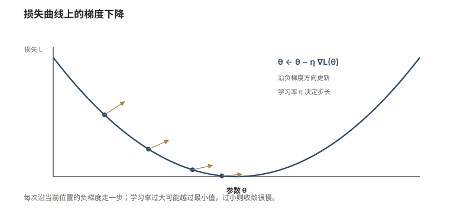

SCI101 · 第 5 章
机器学习数学基础
Math for Machine Learning
虚线下划线为术语；悬停查看中文、英文与释义，完整词典见“术语”。
本章目录
本讲把机器学习拆成两半：线性代数负责“表示与预测”，微积分负责“学习”。全部内容围绕一个循环——把输入写成向量，用矩阵运算算出预测，用损失衡量误差，再用导数决定参数往哪改。
本章要点
- 神经网络本质上是一连串矩阵运算；图像识别与蛋白质结构识别都可归结为矩阵乘法。
- 线性方程组分三类：完备且非奇异（唯一解）、冗余且奇异（无穷多解）、矛盾且奇异（无解）。
- 行列式衡量方程之间的独立程度；行列式为零即奇异。
- 点积产生一个分数；矩阵乘法对每一行做一次点积，因此一次算出所有样本的得分。
- 感知机中“阈值”与“偏置”等价，加偏置只是把判决边界平移。
- 预测使用当前参数，学习改变参数；损失把误差变成一个数，导数指出降低损失的方向。
- 梯度下降更新式 w ← w − α·dL/dw；学习率过大会越过最小值，过小则学得慢。
5.1 为什么需要数学：神经网络就是矩阵运算
讲义开篇给出一句判断：“Neural Networks are Matrix Operations.” 一层的输出是下一层的输入，每一层都是一次矩阵乘法，最后一层给出“Yes! Cat!”这样的判断。所谓“图像识别”，就是让计算机看见图像并认出其中的内容——讲义举的两个例子是纽约繁忙街道的场景识别与蛋白质序列的结构识别，二者在数学上是同一类问题：把输入表示成向量或矩阵，再做变换。
课程大纲页把数学分成两组：线性代数负责“方程组的表示、奇异与非奇异矩阵、把系统看作向量、矩阵乘法、神经网络”；微积分负责“导数与优化、梯度与梯度下降”。这正是本章的两条主线。
L2 p.2–4
5.2 数学循环：表示、预测、学习
讲义把整个过程压缩成三步循环，这三步是全章的目录：
- 表示（represent）：把输入写成向量，例如 x = [2, 1]；
- 预测（predict）：计算 z = wᵀx + b，再取 ŷ = step(z)；
- 学习（learn）：比较 ŷ 与真实 y，调整 w 与 b。
讲义用一句话点明分工：“Linear algebra carries information forward. Calculus tells us how to change the model.”（线性代数把信息往前传，微积分告诉我们如何改变模型。）记住这句话，就记住了为什么两套数学缺一不可。
L2 p.5
5.3 线性方程组：完备、冗余、矛盾
讲义先用“句子系统”（system of sentences）建立直觉，再映射到方程。三类情形一一对应：
| 形态 | 矩阵性质 | 解 |
|---|---|---|
| 完备（complete） | 非奇异（non-singular） | 唯一解 |
| 冗余（redundant） | 奇异（singular） | 无穷多解 |
| 矛盾（contradictory） | 奇异（singular） | 无解 |
讲义的信息题可以直接检验这套分类：狗、猫、鸟三者中有一个是红色；狗与猫中有一个是橙色；狗是黑色。由第三条知狗既非红也非橙，由第二条知猫是橙色，再由第一条推出鸟是红色——解唯一，所以该系统非奇异。若三条陈述互相冲突（例如又说“猫是黑色”），则变成矛盾系统，无解。
几何上，两个变量的线性方程是一条直线：两条直线相交于一点是唯一解，重合是无穷多解，平行是无解。三个变量的方程是平面，情形同理。讲义随后把方程组写成矩阵形式，为行列式做准备。
L2 p.6–13
5.4 行列式：方程独立性的度量
讲义给行列式determinant下了一句可直接背的定义：“A determinant is a measure of how independent the equations are.”（行列式是方程彼此独立程度的度量。）行列式为零意味着方程线性相关，矩阵奇异；不为零则非奇异，存在唯一解。
二乘二矩阵的行列式是 ad − bc；讲义进一步展示三乘三矩阵的计算，并用“对角线”的方式帮助记忆——主对角线方向的乘积取正，副对角线方向的乘积取负，再相加。
把行列式理解为“独立性”而不是“计算公式”很重要：它回答的是“这些方程是否提供了新信息”，而不是“解是多少”。这与 5.3 的三分法是同一件事的两种说法。
L2 p.14–18
5.5 点积与矩阵乘法
讲义用买菜算账引入点积dot product：苹果 2 个、单价 3 元；香蕉 4 个、单价 5 元；樱桃 1 个、单价 2 元。总价 2×3 + 4×5 + 1×2 = 28。把数量写成向量 x = [2, 4, 1]，单价写成权重 w = [3, 5, 2]，则
讲义的解读是：每个特征贡献“它的值乘以它的权重”，点积把所有这些贡献合成一个分数。这正是感知机里 z = wᵀx 的含义——权重就是每个特征的重要性。
矩阵乘法则是“对每一行做一次点积”。若 X 的每一行是一个样本（讲义的自然语言例子中，一行代表一封邮件），那么
一次矩阵乘法就算出所有样本的得分，再经 step 函数变成 0 或 1。这解释了为什么说“矩阵乘法给每个样本打分”：它把逐样本的循环变成了一次批量运算。
L2 p.19–24
5.6 感知机：阈值与偏置等价
一个感知机perceptron由四部分组成：输入 x₀…xₙ、权重 w₀…wₙ、求和（Σ）、激活（阶跃函数）。讲义用一页专门强调：阈值与偏置是等价的。判据 z > θ 可以改写成 z − θ > 0，把 −θ 并入偏置 b，就得到 z + b > 0。因此“调阈值”和“调偏置”在数学上是同一件事，只是参数化的方式不同。
这个等价性在几何上就是“把判决边界平移”：没有偏置时边界过原点，加上偏置后可以移到任意位置。第 6 章会用 −2x₁ − 2x₂ + 3 = 0 这样的例子反复使用这一点。
L2 p.26–27
5.7 预测与学习是两种操作
讲义用两张并排的图区分两件事。预测使用当前参数：输入 x 进入模型（参数 w、b），得到 ŷ。学习改变参数：拿真实 y 与预测 ŷ 算损失 L(y, ŷ)，据此更新 w、b，得到新的参数，再重复预测。
这个区分的实践含义是：训练完成后，推理阶段不再更新参数；参数更新只发生在训练阶段，而且每次更新的依据是损失对参数的导数，而不是预测值本身。
L2 p.31
5.8 损失函数：把误差变成一个数
讲义用一个观测值把损失讲透：x = 2，y = 6，模型是 ŷ = wx，损失取平方误差：
当 w = 1 时，ŷ = 2，L = ½(6 − 2)² = 8。把 L 对 w 画出来是一条开口向上的抛物线，最低点在 w = 3（此时 ŷ = 6，误差为零）。训练就是在这条曲线上寻找损失更低的参数值。
系数 ½ 的作用是让求导后清爽：dL/dw = ½·2(6 − 2w)·(−2) = 4(w − 3)。若不取 ½，导数会多一个因子 2，不影响最小值位置，只影响步长。
L2 p.32
5.9 导数与梯度下降
讲义对同一例子求导：L(w) = ½(6 − 2w)²，dL/dw = 4(w − 3)。在 w = 1 处导数为 −8，是负斜率，说明“增大 w 会降低损失”。于是做一次梯度下降gradient descent更新：
损失从 8.00 降到 2.88。重复该过程得到一串越来越接近最优值的参数：w = 1.00（L = 8.00）→ 1.80（2.88）→ 2.28（1.04）→ 2.57（0.37）。步长随着接近最小值而变小，因为导数本身在变小。

绘图提示词
Clean vector plot of a convex parabolic loss curve with weight w on the horizontal axis and loss L on the vertical axis, four labelled points stepping down the left branch toward the minimum, tangent slope indicated at the first point, and the minimum marked at w equals 3. Flat 2D, thin 1.5 px strokes, muted slate blue and warm grey palette, white background, English labels, no cartoon, no gradient, no shadow.
讲义对学习率给出两条警告：学习率过大可能越过（overshoot）最小值；过小则学得很慢。这也解释了为什么学习率是必须调的超参数hyperparameter。
L2 p.33–34
5.10 完整学习回路与三条结论
把前面各节接起来，就是讲义所谓的完整回路：数据 x → 预测 ŷ = f(x; w, b) → 损失 L(y, ŷ) → 更新 w ← w − α∇L → 用新参数重复。线性代数负责算出模型输出，微积分负责找出能降低损失的参数变化；神经网络只是把这两步在许多相连的层上重复。
| 数学 | 在循环中的位置 | 具体工具 |
|---|---|---|
| 线性代数 | 表示与预测 | 向量、矩阵、点积、矩阵乘法 |
| 微积分 | 学习 | 导数、梯度、梯度下降 |
讲义的收尾结论有三条：算法看起来像黑箱，但其力量建立在这些基础数学之上；数据集本质上是数字的表格，线性代数提供了操作与理解这些表格的词汇；训练的核心是最小化误差，微积分提供了工具，导数与梯度告诉我们调整参数以降低误差的方向。
L2 p.36–37